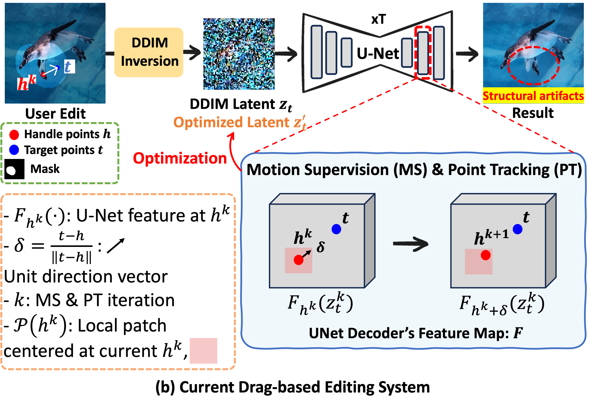

Problem
Current drag-based image editing methods suffer from geometric inconsistency because they rely primarily on optimizing user-defined points locally, neglecting global geometric context. This approach often leads to unnatural deformations and structural artifacts in edited images. Moreover, the absence of a reliable benchmark with ground truth data makes it challenging to quantitatively evaluate the accuracy of such editing results.

